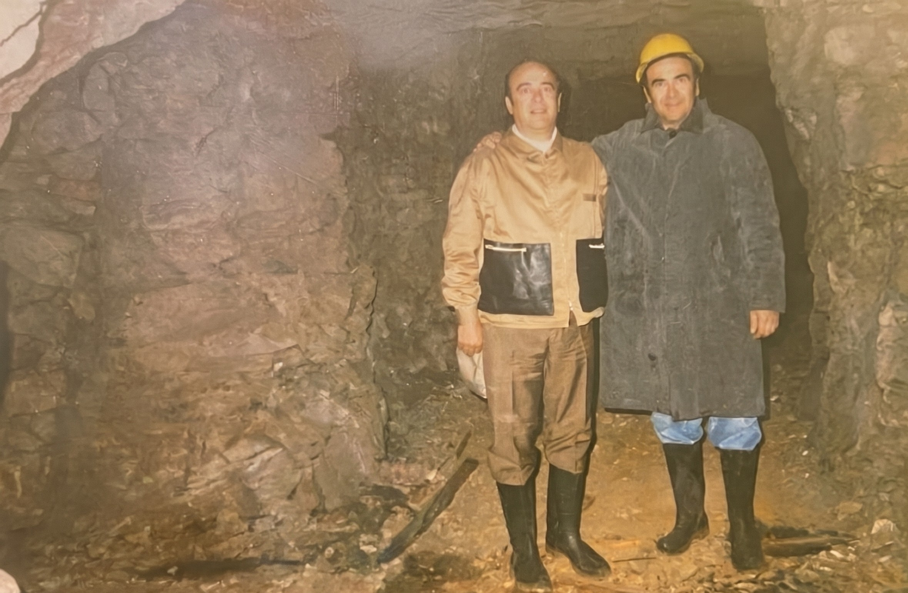

01
Planta industrial alpha
Equipada con prensas de compactado multiaxial y hornos de sinterizado al vacio para control total de porosidad.
Pulvimetalurgia & excelencia
Desde nuestra fundacion, hemos transformado la industria a traves de la pulvimetalurgia avanzada, creando componentes de carburo de tungsteno que definen los estandares de ingenieria submicronica.
La Empresa fue fundada por Nivaldo a fines de la década del '60. Para su proceso productivo realizaban la extracción de Wolfram en canteras de la zona del Valle de Punilla (Pampa de Olaen) mediante este proceso, se elaboraba el Carburo de Tungsteno para luego realizar el sinterizado de piezas acorde a las solicitudes; sumando a través de los años la incorporación de producción de herramientas especiales para el mecanizado de piezas.
Transcurriendo el año 1995 los hijos de Nivaldo comienzan a participar en la empresa familiar. Tras la crisis del 2000 la nueva generación: Ariel, Karina, Mariela, Romina y Hernán; deciden fundar por su parte una nueva compañía: ANTARES, haciendo alusión a la “estrella más brillante de la constelación”.
En sus inicios su mercado principal fue la industria Automotriz y Petrolera, trabajando fuertemente en la diversificación de la producción de la empresa, llegando con el tiempo a proveer a los distintos sectores industriales, utilizando intensamente la capacidad del sinterizado, lo que permitió aumentar la cantidad de productos y tecnificar sus procesos.
En la actualidad, la empresa se encuentra trabajando para posicionarse como exportador en países donde ya se encuentra operando, como Bolivia y Chile; renovando la apuesta al crecimiento, con el entusiasmo y compromiso de los primeros tiempos.
«Compartimos nuestro profundo agradecimiento y reconocemos los valores que Nivaldo Corradi, nuestro padre, supo transmitirnos como pilares de nuestro trabajo: Fortaleza, Creatividad y Espíritu Resiliente.»

Equipada con prensas de compactado multiaxial y hornos de sinterizado al vacio para control total de porosidad.
Mecanizado submicronico y control de calidad mediante interferometria laser.
Pulvimetalurgia. Analisis de distribucion de tamano de particula para fabricacion eficiente.
Certificacion. Sistema de calidad integral bajo normativa ISO 9001:2015 para manufactura de precision.
Nace la piedra angular de nuestra historia de la mano de su fundador, Nivaldo Corradi, sentando las bases de compromiso y trabajo que nos definen hasta hoy.
La empresa fortalece su estructura con la incorporacion de los hijos de Nivaldo: Ariel, Hernan, Mariela, Karina y Romina, aportando nueva energia al crecimiento organizacional.
Frente a los desafios del contexto economico nacional, la segunda generacion demuestra su resiliencia y vision estrategica fundando Antares S.R.L.
Marcamos un hito en nuestra capacidad productiva al importar desde Estados Unidos la primera CNC Walter, posicionando nuestra planta industrial a la vanguardia tecnica.
Fieles a nuestro estandar de maxima calidad, ejecutamos un plan integral de mejoras edilicias y operativas para optimizar la experiencia de nuestros clientes.
Continuamos la expansion de nuestras capacidades mediante la adquisicion de maquinaria de corte por hilo con tecnologia de punta, ampliando nuestra precision tecnica.
Celebramos la incorporacion de la tercera generacion familiar, asegurando la continuidad de nuestros valores y la renovacion de nuestra vision de negocio.
Consolidamos nuestro liderazgo tecnologico con la llegada del nuevo Centro de Afilado CNC Walter, reafirmando nuestra apuesta por la mejora constante y la precision absoluta.